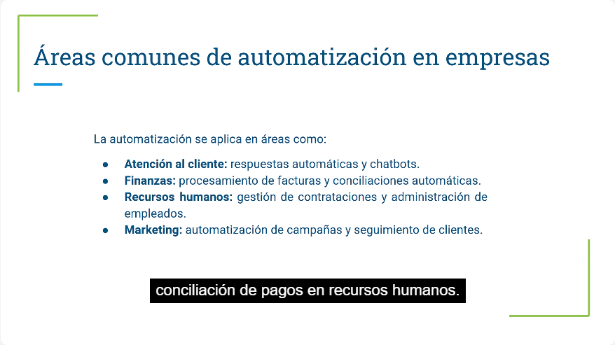
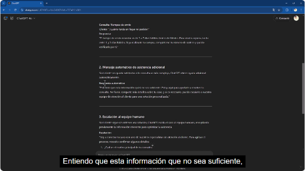
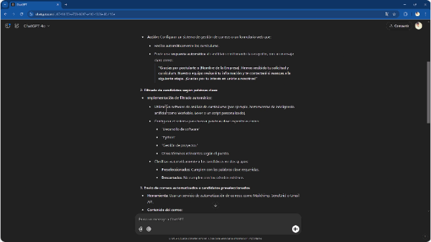
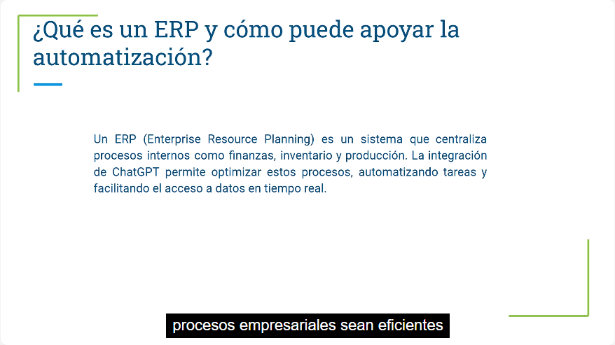
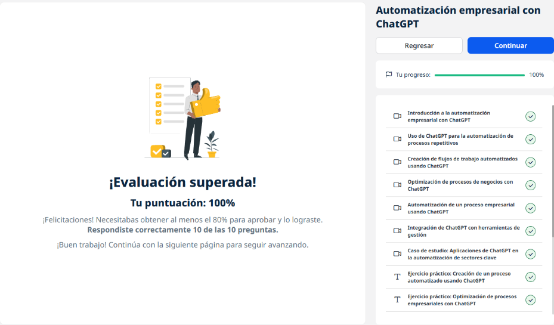

15 · Automatización empresarial con ChatGPT¶
Plataforma: UBITS · Duración: 127 min · Nivel: intermedio · Resultado: test aprobado con 10/10 (100 %)
Es la unidad 6 de la serie. Muestra cómo usar ChatGPT para diseñar automatizaciones:
- respuestas a preguntas frecuentes;
- flujos con escalamiento a una persona;
- optimización de procesos;
- contratación;
- integración con CRM y ERP.
Aclaración del instructor: el curso trabaja la parte de ingeniería de prompts, es decir, generar el contenido y el diseño del flujo. La conexión técnica entre sistemas es otro paso.
Son 7 videos (unos 55 min), 3 ejercicios y 2 lecturas.
1. Qué es la automatización empresarial¶
Qué es: usar tecnología para ejecutar tareas que de otro modo requieren intervención humana, desde un recordatorio hasta procesos entre varias áreas.
Beneficios:
- menos costos operativos;
- menos errores;
- más consistencia;
- tiempo libre para el trabajo estratégico.

Video 1, min 2:10: dónde se aplica la automatización.| Área | Ejemplos |
|---|---|
| Atención al cliente | Respuestas automáticas y chatbots |
| Finanzas | Procesar facturas y conciliar pagos |
| Recursos humanos | Contrataciones y administración de empleados |
| Marketing | Campañas programadas y seguimiento personalizado |
Límites de ChatGPT:
- la precisión depende de los datos que recibe;
- no hace tareas físicas;
- es limitado en decisiones complejas;
- siempre requiere supervisión.
2. Procesos repetitivos: preguntas frecuentes¶
El caso: una tienda en línea quiere respuestas automáticas sobre métodos de pago, devoluciones y tiempos de envío.
Lo que entrega ChatGPT: una plantilla.
Lo que hay que hacer: editarla con los datos reales del negocio. Si no se acepta American Express o no hay pago en efectivo, se corrige. Sin ese paso, el chatbot daría información falsa.
3. Flujos de trabajo automatizados¶
El caso: atención al cliente de una tienda de moda en tres niveles.

Video 3, min 2:30: mensaje de asistencia adicional y escalamiento al equipo humano.- Respuesta inicial a las consultas comunes: productos, devoluciones, envíos.
- Mensaje de asistencia adicional si el cliente no quedó satisfecho.
- Escalamiento a una persona, con la información relevante ya reunida.
Regla: las respuestas deben ser claras y breves, y escalar solo cuando hace falta.
4. Optimizar procesos de negocio¶
El caso: una tienda de tecnología pierde ventas por respuestas lentas y faltantes de inventario.
| Ineficiencia | Recomendación |
|---|---|
| Respuestas lentas | Chat en vivo, mejor posventa |
| Productos agotados | Alertas de inventario y avisos de reposición al cliente |
| Sin seguimiento a prospectos | Correos de carrito abandonado, segmentación |
| Pago complejo | Simplificarlo y optimizarlo para móvil |
| Sin estado del pedido | Seguimiento en tiempo real y notificaciones |
Consejos:
- con el paso a paso real del proceso de ventas, el análisis es mucho más preciso;
- ChatGPT a veces ofrece dos respuestas para elegir la mejor.
5. Automatizar la contratación¶

Video 5, min 2:20: recepción, filtrado por palabras clave y correos automatizados.- Recepción: formulario o correo dedicado, con acuse automático.
- Filtrado por palabras clave del CV (desarrollo de software, Python, gestión de proyectos): candidatos preseleccionados y descartados.
- Invitación por correo automatizado, con enlace para agendar.
- Confirmación automática de la entrevista con herramientas de agenda como Calendly o Microsoft Bookings.
- Evaluación y retroalimentación.
6. Integración con herramientas de gestión¶
| Sistema | Qué es | Qué aporta ChatGPT |
|---|---|---|
| CRM | Información y relación con los clientes: historial, preferencias, comunicaciones | Notificaciones y respuestas personalizadas según el historial, pedir opinión después de la compra |
| ERP | Procesos internos: finanzas, inventario, recursos humanos, producción | Reportes de inventario, disponibilidad en tiempo real, pedidos de reposición automáticos |

Video 6, min 1:40: el ERP y cómo apoya la automatización.7. Casos por sector¶
Video 7, min 1:00: el ejemplo de comercio electrónico.
| Empresa | Sector | Uso |
|---|---|---|
| H&M | Retail y atención | Devoluciones, horarios, disponibilidad; menos espera |
| Shopify | Comercio electrónico | Recomendaciones y asistencia en la compra: más conversión, menos carritos abandonados |
| American Express | Finanzas | Saldos, transacciones, recompensas; el personal se enfoca en lo complejo |
Buenas prácticas y riesgos¶
- IA colaborativa: ChatGPT complementa el trabajo humano, no lo sustituye.
- Probar y ajustar los flujos antes de implementarlos del todo.
- Supervisar los resultados.
- Riesgos:
- dependencia de datos precisos y actualizados;
- automatizar de más frustra a los clientes que necesitan una respuesta personalizada.
- Privacidad y protección de datos del cliente.
Ejercicios prácticos¶
- Proceso automatizado con ChatGPT.
- Optimizar un proceso empresarial.
- Flujo de trabajo diseñado con su ayuda.
Evaluación (10/10)¶
- Un beneficio clave → menos errores humanos.
- El área donde más se automatizan las preguntas frecuentes → atención al cliente.
- Un desafío de la automatización avanzada → la dependencia de datos precisos y en tiempo real.
- Qué permite la integración con un CRM → personalizar la interacción con los clientes.
- Un caso de automatización en recursos humanos → responder consultas sobre beneficios.
- Qué es la «IA colaborativa» → complementa el trabajo humano en flujos complejos.
- Una buena práctica → probar y ajustar los flujos antes de implementarlos del todo.
- El sector que la usa para inventario y disponibilidad → comercio electrónico.
- Un límite de la automatización excesiva → frustra a quien necesita una respuesta personalizada.
- La clave de seguridad → la privacidad y protección de los datos del cliente.
Evidencia¶

Curso al 100 % y test superado con 10 de 10.Fuentes y aviso legal¶
- Fuente: curso «Automatización empresarial con ChatGPT» de la plataforma UBITS, asignado dentro de un plan de formación empresarial.
- Uso: apuntes personales de estudio, sin fines comerciales y con redacción propia. Las capturas son fragmentos breves citados con fines educativos; sus derechos son de sus titulares.
- Sin afiliación: sitio no oficial, no afiliado ni respaldado por UBITS, OpenAI ni las empresas mencionadas. Las marcas pertenecen a sus dueños.
- Más detalles y cómo pedir el retiro de contenido en el aviso legal.